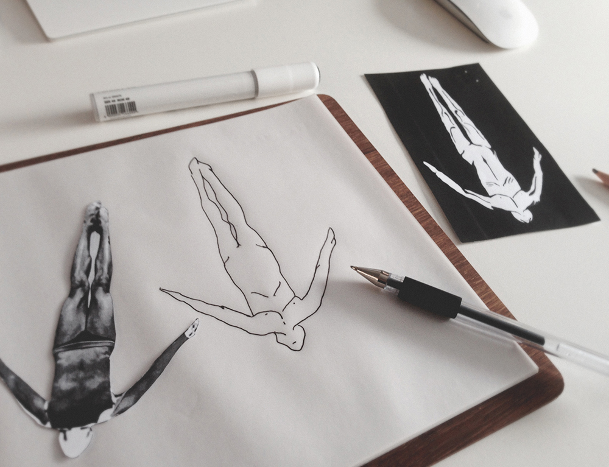
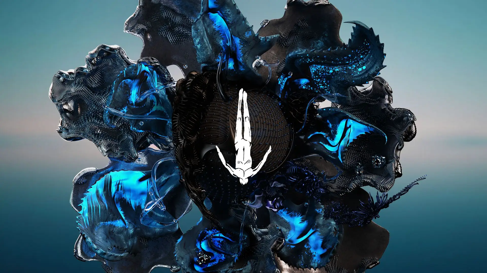

Diseños
Diseño destacado del logo cuando se fundó
Dibujo en el cual nació el sello Afterlife en 2016. En ese año Tale Of Us tenía residencia por 16 semanas en el Club Space de Ibiza, así fue como la propuesta de show revivió sonoramente a la isla, y se presentaron productores de la escena techno underground, que era uno de sus objetivos con AFTERLIFE, impulsar productores que conectaran con el concepto.
Diseño y visuales sobre la pantalla de los escenarios o álbums. Es una asombrosa experiencia visual que convive con la música electrónica. Los efectos visuales de Afterlife son diseñados por la compañía Encode Talent y el artista visual Michael Titze con la dirección creativa de Roberto Rosolin. sello discográfico y un concepto de fiesta que trasciende a un simple evento, llega a Ciudad de México. El Melodic Techno es el género estrella de estos enormes eventos, siendo claro el de Tale Of Us, los creadores de Afterlife, el que sobresale y trasciende. Es también gracias a que el Techno es un género en tendencia que este gran evento se ha popularizado muchísimo, pudiéndolo escuchar ya en todos lados y en muchos clubes, festivales o conciertos. La música es lo que nos lleva a un evento claro, pero también vamos por la experiencia única de sus visuales.
